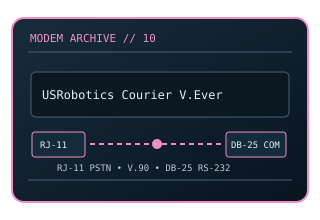

[ MODEL-SPECIFIC NETWORK HARDWARE ]
USRobotics Courier V.Everything 3CP3453 V.90 Modem
Professional external analog modem with a serial host interface and V.90-era dial-up signaling. This static record documents the modem-side line technology separately from its host interface and provider-dependent service rate.

MODEL IDENTIFICATION: Match the exact model number and hardware revision on the device label. Similar names, regional SKUs and provider-branded variants may have different ports, firmware, modulation or driver support.
Exact specifications and compatibility
| Cataloged model | USRobotics Courier V.Everything 3CP3453 V.90 Modem |
|---|---|
| Dedicated subcategory | Modems and line-termination devices |
| Modulation / line protocol | ITU-T V.90; V.34/V.34bis upstream and fallback modes; RJ-11 analog telephone-line input; V.90 PCM downstream with V.34 upstream (maximum 33.6 kb/s), plus negotiated lower-speed legacy fallbacks. |
| Line / physical interfaces | RJ-11 analog telephone-line input; V.90 PCM downstream with V.34 upstream (maximum 33.6 kb/s), plus negotiated lower-speed legacy fallbacks. |
| Nominal data rate | V.90 receive signaling nominally up to 56 kb/s; upstream up to 33.6 kb/s. Serial DTE rate is separate from the telephone-line data rate and is configured by the host/modem. |
| Bus / host interface | RS-232 serial DTE connection via DB-25; RJ-11 telephone line. An appropriate serial port or correctly configured USB-to-serial bridge is required. |
| Operating-system compatibility | The modem uses AT commands over a serial port, so host OS support depends on serial-port availability and dial-up/terminal software rather than a special network driver. Modern systems may need a compatible serial adapter; legacy OS and line regulations affect use. |
| Driver / firmware notes | Not every Courier V.Everything unit shipped with the same firmware/features; verify the 3CP3453 label, firmware revision, country approval and current analog-line availability. Do not confuse serial DTE speed with 56K line speed. |
| Wi-Fi / switching | No Wi-Fi access point or Ethernet switching function is cataloged for this modem. |
Model-specific notes
Not every Courier V.Everything unit shipped with the same firmware/features; verify the 3CP3453 label, firmware revision, country approval and current analog-line availability. Do not confuse serial DTE speed with 56K line speed. Nominal signaling rates are standards/model ceilings rather than specimen test results or a promise of ISP throughput.
Manufacturer, archive and standards references
- Internet Archive catalog copy of the USRobotics 3CP3453 user manualArchived model-specific guide or software documentation for identification and legacy host details.
- USRobotics manufacturer site (legacy product archive/support)Manufacturer source; confirm regional SKU, revision and present support status.
- ITU-T Recommendation V.90 — digital modem and analogue PSTN connectionStandards reference for the relevant line/modem signaling family; implementation and ISP profile remain model-specific.
Check manufacturer and provider support for the exact region, revision, line profile, firmware and host OS before deployment.